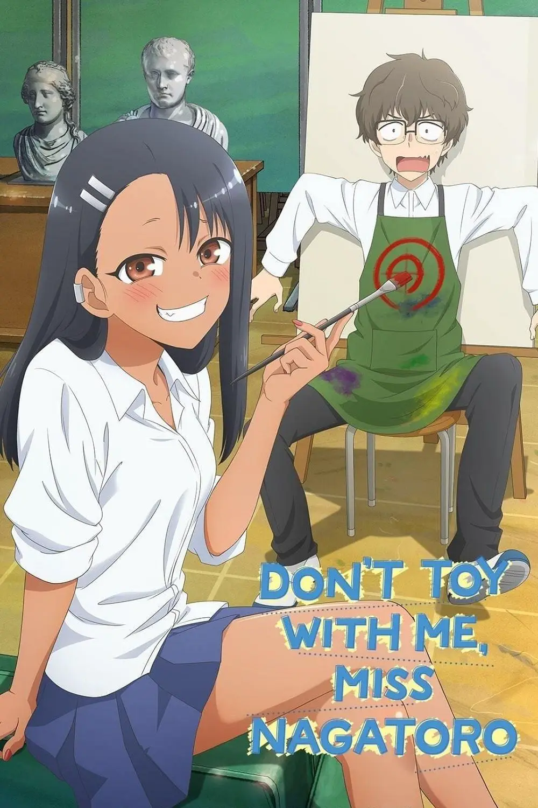

| N. |
Nome |
Descrizione |
Immagine |
Rating |
| 1 |
My Hero Academia |
"My Hero Academia" è un manga e un anime giapponese creato da Kohei Horikoshi. La storia è ambientata in un mondo dove le persone con superpoteri, noti come "Quirk", sono comuni. Il protagonista, Izuku Midoriya, è uno dei pochi senza un Quirk, ma riceve eredità da All Might, il più grande eroe del mondo, e diventa l'apprendista di All Might. La trama segue le avventure di Izuku e dei suoi compagni nella U.A. High School, un'accademia per futuri eroi. L'opera esplora temi di eroismo, crescita personale e rivalità. La serie ha guadagnato popolarità per il suo stile di disegno dinamico e personaggi ben sviluppati. |
 |
9.5 |
| 2 |
Spy X Family |
"Spy x Family" è un manga e un anime creato da Tatsuya Endo che si svolge in un mondo dove spie e agenti segreti sono all'ordine del giorno. Il protagonista, Twilight, è un agente segreto di alto livello incaricato di infiltrarsi in un'organizzazione criminale. Per portare a termine la sua missione, deve formare una famiglia falsa, che include sua moglie, Yor Briar, un'assassina con una copertura di lavoro in provincia, e la loro figlia telepate, Anya. La trama segue le loro avventure mentre cercano di convivere sotto lo stesso tetto e mantenere i loro segreti, mentre affrontano missioni rischiose e situazioni comiche. Il manga è noto per la sua combinazione di azione, commedia e dramma, oltre ai personaggi interessanti e ben sviluppati. |
 |
9.0 |
| 3 |
Non tormentarmi Nagatoro |
"Non tormentarmi, Nagatoro" è un manga e un anime giapponese creato da Nanashi. La storia segue le vicende di Hayase Nagatoro, una studentessa liceale che prende gusto a tormentare e provocare il suo compagno di scuola, Naoto Hachioji. Nonostante sembri una bullo, Nagatoro mostra gradualmente una natura affettuosa e preoccupata per Hachioji. La trama si concentra sulla loro relazione, esplorando dinamiche di flirt e amicizia. Il manga è noto per il suo stile di disegno dettagliato e per come affronta le complesse emozioni dei personaggi. La storia affronta temi come la crescita personale e la scoperta di se stessi attraverso le interazioni quotidiane. |
 |
9.0 |
| 4 |
Mercoledì |
Mentre frequenta la Nevermore Academy, Mercoledì Addams cerca di padroneggiare le emergenti capacità psichiche. Nel frattempo, tenta di sventare una serie di omicidi e risolvere il mistero che ha coinvolto i suoi genitori 25 anni prima. |
 |
8.7 |